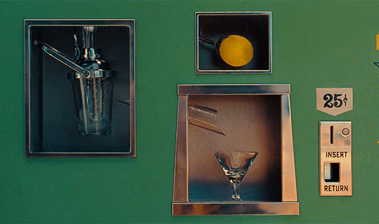
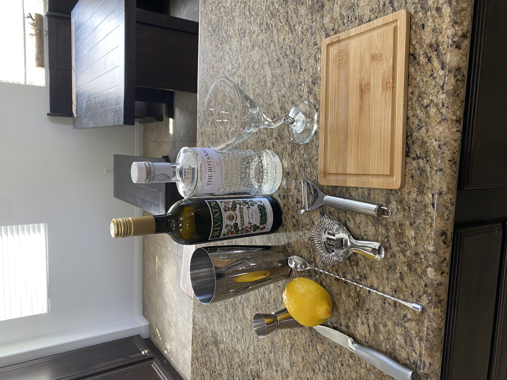

Today’s simple martini recipe is built from watching “Asteroid City” by Wes Anderson. It conveys a refreshing yet stiff drink as a respite for a miserable hot desert day.

Remember the rule of thumb for making cocktails is 3oz. So, we will have 2oz of Botanical Gin and 1oz of Dry Vermouth, and we will include a twist from a lemon. This will be served up in a chilled Martini glass.
Ingredients:
2oz Botanical Gin
1oz Dry Vermouth
Lemon Peel

Directions:
Chill the martini glass by filling it with ice and water.
Fill Boston Shaker half full of ice and pour in Gin and Vermouth.
Stir for 30 seconds with a bar spoon. (I’ll say it, James Bond was wrong! You should always stir your martinis to keep them from looking cloudy from broken ice shards.)
Let sit to dilute while you prepare your lemon twist. Using a vegetable peeler, peel off about 3 inches of the lemon peel, and using a knife trim off the edges for aesthetic appeal.
Dump the ice from your martini glass and strain the cocktail into the martini glass.
Fold the lemon peel over your glass to express the oils over your drink and rub the rim of the glass with the outside of the lemon peel.